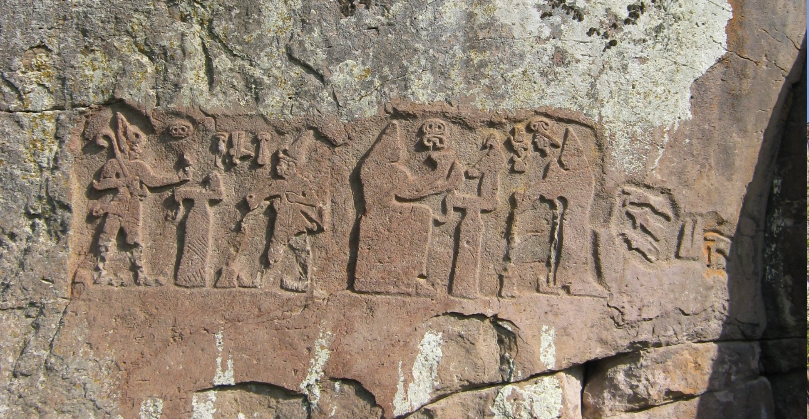
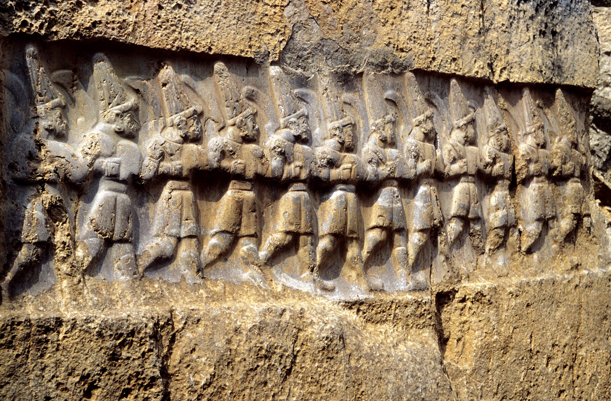

The Hittites ruled central Anatolia for five centuries, from roughly 1700 to 1200 BCE. Their capital, Hattusa, stood among mountains and forests in what is now north-central Turkey. And in the cuneiform tablets preserved beneath its ruins, wine appears not as a passing mention but as a constant presence — sacred, regulated, essential.
They called it wiyana.
The word belongs to an ancient linguistic family that still survives today in Greek oinos, Latin vinum, and the English wine. Across thousands of years and shifting languages, the sound remains recognizable — one of the oldest enduring words tied to the culture of wine.
But the Hittites inherited more than a word.
Archaeological evidence places some of the earliest known grape domestication in southeastern Turkey around nine thousand years ago. By the time the Hittites rose to power, viticulture in Anatolia was already ancient. They inherited an old relationship between people and vine — and made it sacred.

teshub
Many ancient cultures divided the forces of nature among different gods. Storm belonged to one realm, cultivated abundance to another. In Hittite religion, the connection between them remained visible.
Teshub — the great storm god adopted into the Hittite pantheon — ruled rain, weather, and fertility. In the rock sanctuary of Yazılıkaya near Hattusa, he appears at the head of a procession of gods, moving forward in divine authority. At Fraktin, a relief shows King Hattusili III pouring a libation while Queen Puduhepa stands beside him in offering.

The relationship was intuitive. The rain that crashes down in spring becomes the force that nourishes fruit in autumn. Storm and vineyard were not separate worlds. The weather god governed the conditions that made cultivation possible.
Wine came from the sky.

the vessels
What survives from Hittite wine culture is largely ceremonial.
Silver rhytons — ritual drinking and pouring vessels shaped like bulls and stags — carried wine to the gods. Liquid entered through the vessel and emerged in a controlled stream onto altars or into offering bowls.

The stag rhyton at the Metropolitan Museum was formed from a single hammered sheet of silver, with separately attached horns and a decorated joining band between cup and head. Around its body runs a procession scene.
This was not tableware.
It was a ritual instrument — a vessel designed to turn pouring into offering.
Bulls appear throughout Hittite sacred imagery as well. Sherri and Khurri, the divine bulls associated with Teshub, pulled the storm god's chariot across the heavens. A bull-shaped vessel poured wine through the form of an animal already tied to divine power.
The symbolism layered upon itself: vessel became animal, animal became attendant, attendant became offering.

The İnandık Vase, found in central Anatolia and now preserved in Ankara, reveals the broader ritual world: musicians, processions, offerings, sacred ceremony.
Wine moves through these scenes.
Not as decoration — but as a medium through which the sacred became visible.
the law
Wine was valuable enough to enter the law.
Hittite legal texts contain provisions concerning vineyards and agricultural damage. One law addresses the destruction of vines through spreading fire and requires compensation and replacement.
This was not property in the abstract.
Vineyards took years to establish. Their destruction threatened future harvests and demanded restitution.
Wine was not only ritual. It was infrastructure.
Festivals marked the agricultural cycle, and harvest carried religious significance as well as economic value.
Wine structured time.
what remains
Around 1200 BCE, the Hittite civilization collapsed as part of the wider upheavals that transformed the eastern Mediterranean at the end of the Bronze Age.
Hattusa was abandoned.
The tablets disappeared beneath stone and earth.
For nearly three thousand years, this world remained silent.

When archaeologists began excavating in the nineteenth and twentieth centuries, they uncovered evidence of a sophisticated wine culture that long predated the classical world.
The grape was already sacred here when Mycenaean Greece was still young.
The rituals were already ancient before Homer sang.
Today, wine is still made in the highlands of Anatolia — in Cappadocia, near Kayseri, and across landscapes once connected to Hittite rule.
Empires disappeared.
The vines remained.
And the ancient word for wine still echoes, however distantly, each time we raise a glass.
The land remembers.
sources
- Metropolitan Museum of Art — Vessel terminating in the forepart of a stag
- Metropolitan Museum of Art — Vessel terminating in the forepart of a bull
- World History Encyclopedia — İnandık Vase
- Fıraktın Rock Relief
- Yazılıkaya Sanctuary
- Gorny, R. L. "Viticulture and Wine in Hittite Anatolia and Its Ancient Near Eastern Context"
- Diffey, C. et al. "The Archaeobotany of Grape and Wine in Hittite Anatolia"